|
|
| soft corals text index | photo index |
| Phylum Cnidaria > Class Anthozoa > Subclass Alcyonaria/Octocorallia > Order Alcyonacea > Family Alcyoniidae |
| Starry
leathery soft coral Sinularia brassica* Family Alcyoniidae Updated Dec 2024 Where seen? This leathery soft coral with polyps like little stars is sometimes seen on some of our shores. Among coral rubble and sandy areas near reefs. Features: The colony about 10-15cm in diameter. Sometimes covering large areas of 50cm or more. The colony may be thick, disk-like with a highly ruffled edge, or encrusting with knobs, lobes and fingers. The surface of the leathery common tissue usually has many large spindle-shaped structures usually paler than the common tissue. This is more obvious when the colony is out of water and the autozooid polyps are retracted. Common tissue may be beige, pinkish to yellowish, or dark brown to purplish. It has only one kind of polyp (autozooid) although there are very tiny spots among the autozooids giving the leathery common tissue has a rather 'crystalline' appearance. The transparent polyps are tiny (0.2cm), 8 short conical tentacles with tiny branches, the body column hardly seen. The autozooids can retract completely into the common tissue. In some, the autozooids emerge from small lumps or even long tubular segments of the common tissue. The animals harbour symbiotic algae (zooxanthellae). During one night trip, a large colony was seen with many tiny brittle stars all over the surface. This has not been observed during daylight visits. Status and threats: As at 2024, it is assessed not to be approaching the criteria for being listed among the threatened animals in Singapore. |
|
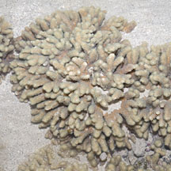 Terumbu Bemban, Jul 11  8 short fat branched tentacles. |
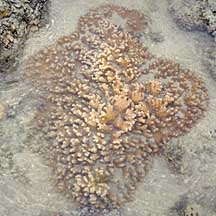 Terumbu Berkas, Jan 10  Many fat, spindle shaped structures embedded in the common tissue . |
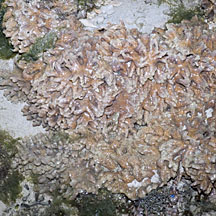 Terumbu Pempang Tengah, Apr 12 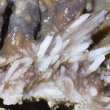 Spindles sticking out of torn common tissue. |
 Tuas, Dec 03  Tiny spots give the common tissue a 'crystalline' appearance. |
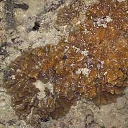 Labrador, Jul 05 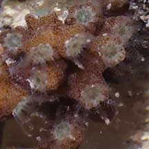 Tiny transparent star-like polyps. |
 Tuas, Dec 03 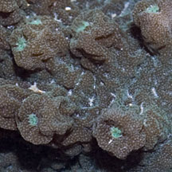 Polyps appear on lumps or tubular extensions. |
*Species are difficult to positively identify without close examination.
On this website, they are grouped by external features for convenience of display.
| Starry leathery soft corals on Singapore shores |
On wildsingapore
flickr
|
| Other sightings on Singapore shores |
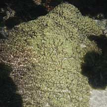 Pulau Biola, Dec 09 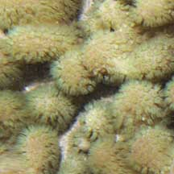 |
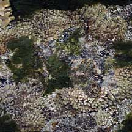 Terumbu Salu, Jan 10 |
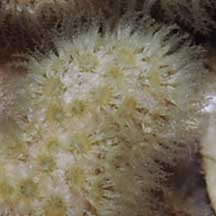 |
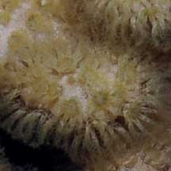 |
|
Links
References
|